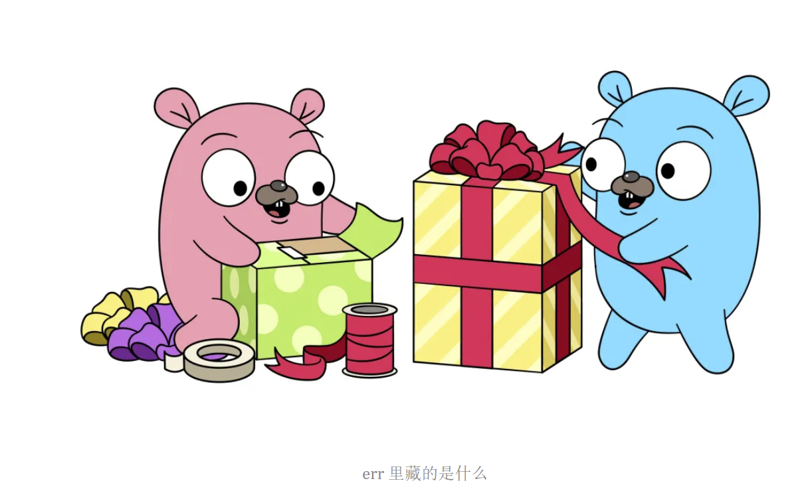
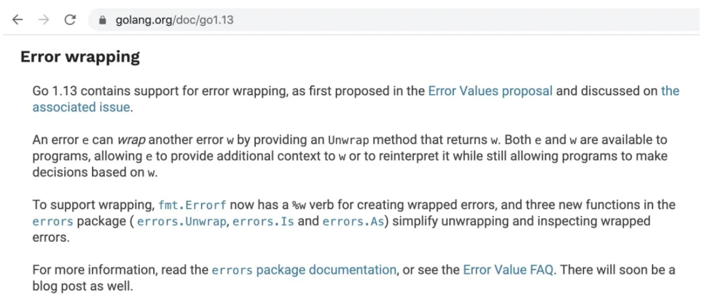
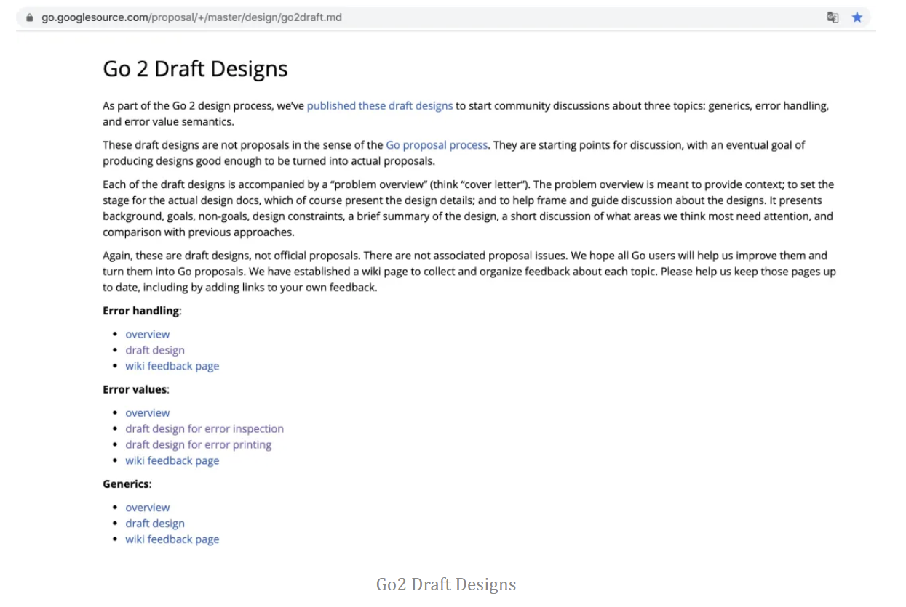

先睹为快，Go2 Error 的挣扎之路
自从 Go 语言在国内火热以来，除去泛型，其次最具槽点的就是 Go 对错误的处理方式，一句经典的 if err != nil 暗号就能认出你是一个 Go 语言爱好者。

err 里藏的是什么自然，大家对 Go error 的关注度更是高涨，Go team 也是，因此在 Go 2 Draft Designs 中正式提到了 error handling（错误处理）的相关草案，希望能够在未来正式的解决这个问题。
在今天这篇文章中，我们将一同跟踪 Go2 error，看看他是怎么 “挣扎” 的，能不能破局？
为什么要吐槽 Go1
要吐槽 Go1 error，就得先知道为什么大家到底是在喷 Error 哪里处理的不好。在 Go 语言中，error 其实本质上只是个 Error 的 interface：
1 | type error interface { |
实际的应用场景如下：
1 | func main() { |
单纯的看这个例子似乎没什么问题，但工程大了后呢？
显然 if err != nil 的逻辑是会堆积在工程代码中，Go 代码里的 if err != nil 甚至会达到工程代码量的 30% 以上：
1 | func main() { |
暴力的对比一下，就发现四行函数调用，十二行错误，还要苦练且精通 IDE 的快速折叠功能，还是比较麻烦的。
另外既然是错误处理，那肯定不单单是一个 return err 了。在工程实践中，项目代码都是层层嵌套的，如果直接写成：
1 | if err != nil { |
在实际工程中肯定是不行。你怎么知道具体是哪里抛出来的错误信息，实际出错时只能瞎猜。大家又想出了 PlanB，那就是加各种描述信息：
1 | if err != nil { |
虽然看上去人模人样的，在实际出错时，也会遇到新的问题，因为你要去查这个错误是从哪里抛出来的，没有调用堆栈，单纯几句错误描述是难以定位的。
这时候就会发展成到处打错误日志：
1 | func main() { |
虽然到处打了日志，就会变成错误日志非常多，一旦出问题，人肉可能短时间内识别不出来。
最常见的就是到 IDE 上 ctrl + f 搜索是在哪出错。同时在实际应用中我们会自定义一些错误类型，在 Go 则需要各种判断和处理：
1 | if err := dec.Decode(&val); err != nil { |
你得判断不等于 nil，还得对自定义的错误类型进行断言，整体来讲比较繁琐。
汇总来讲，Go1 错误处理的问题至少有：
- 在工程实践中，
if err != nil写的烦，代码中一大堆错误处理的判断，占了相当的比例，不够优雅。 - 在排查问题时，Go 的
err并没有其他堆栈信息，只能自己增加描述信息，层层叠加，打一大堆日志，排查很麻烦。 - 在验证和测试错误时，要自定义错误（各种判断和断言）或者被迫用字符串校验。
Go1.13 的挽尊
在 2019 年 09 月，Go1.13 正式发布。其中两个比较大的两个关注点分别是包依赖管理 Go modules 的转正，以及错误处理 errors 标准库的改进：

Error wrapping在本次改进中，errors 标准库引入了 Wrapping Error 的概念，并增加了 Is/As/Unwarp 三个方法，用于对所返回的错误进行二次处理和识别。
同时也是将 Go2 error 预规划中没有破坏 Go1 兼容性的相关功能提前实现了。
简单来讲，Go1.13 后 Go 的 error 就可以嵌套了，并提供了三个配套的方法。例子：
1 | func main() { |
输出结果：
1 | $ go run main.go |
在上述代码中，变量 w 就是一个嵌套一层的 error。最外层是 “快抓住：”，此处调用 %w 意味着 Wrapping Error 的嵌套生成。因此最终输出了 “快抓住：脑子进煎鱼了”。
需要注意的是，Go 并没有提供 Warp 方法，而是直接扩展了 fmt.Errorf 方法。而下方的输出由于直接调用了 errors.Unwarp 方法，因此将 “取” 出一层嵌套，最终直接输出 “脑子进煎鱼了”。
对 Wrapping Error 有了基本理解后，我们简单介绍一下三个配套方法：
1 | func Is(err, target error) bool |
errors.Is
方法签名：
1 | func Is(err, target error) bool |
方法例子：
1 | func main() { |
errors.Is 方法的作用是判断所传入的 err 和 target 是否同一类型，如果是则返回 true。
errors.As
方法签名：
1 | func As(err error, target interface{}) bool |
方法例子：
1 | func main() { |
errors.As 方法的作用是从 err 错误链中识别和 target 相同的类型，如果可以赋值，则返回 true。
errors.Unwarp
方法签名：
1 | func Unwrap(err error) error |
方法例子：
1 | func main() { |
该方法的作用是将嵌套的 error 解析出来，若存在多级嵌套则需要调用多次 Unwarp 方法。
民间自救 pkg/errors
Go1 的 error 处理固然存在许多问题，因此在 Go1.13 前，早已有 “民间” 发现没有上下文调试信息在实际工程应用中存在严重的体感问题。
因此 github.com/pkg/errors 在 2016 年诞生了，该库也已经受到了极大的关注。
官方例子如下：
1 | type stackTracer interface { |
简单来讲，就是对 Go1 error 的上下文处理进行了优化和处理，例如类型断言、调用堆栈等。若有兴趣的小伙伴可以自行到 github.com/pkg/errors 进行学习。
另外你可能会发现 Go1.13 新增的 Wrapping Error 体系与 pkg/errors 有些相像。
你并没有体会错，Go team 接纳了相关的意见，对 Go1 进行了调整，但调用堆栈这块因综合原因暂时没有纳入。
Go2 error 要解决什么问题
在前面我们聊了 Go1 error 的许多问题，以及 Go1.13 和 pkg/errors 的自救和融合。你可能会疑惑，那…Go2 error 还有出场的机会吗？即使 Go1 做了这些事情，Go1 error 还有问题吗？
并没有解决，if err != nil 依旧一把梭，目前社区声音依然认为 Go 语言的错误处理要改进。
Go2 error proposal
在 2018 年 8 月，官方正式公布了 Go 2 Draft Designs，其中包含泛型和错误处理机制改进的初步草案：

Go2 Draft Designs注：Go1.13 正式将一些不破坏 Go1 兼容性的 Error 特性加入到了 main branch，也就是前面提到的 Wrapping Error。
错误处理（Error Handling）
第一个要解决的问题就是大量 if err != nil 的问题，针对此提出了 Go2 error handling 的草案设计。
简单例子：
1 | if err != nil { |
优化后的方案如下：
1 | func CopyFile(src, dst string) error { |
主函数：
1 | func main() { |
该提案引入了两种新的语法形式，首先是 check 关键字，其可以选中一个表达式 check f(x, y, z) 或 check err，其将会标识这是一个显式的错误检查。
其次引入了 handle 关键字，用于定义错误处理程序流转，逐级上抛，依此类推，直到处理程序执行 return 语句，才正式结束。
错误值打印（Error Printing）
第二个要解决的问题是错误值（Error Values）、错误检查（Error Inspection）的问题，其引申出错误值打印（Error Printing）的问题，也可以认为是错误格式化的不便利。
官方针对此提出了提出了 Error Values 和 Error Printing 的草案设计。
简单例子如下：
1 | if err != nil { |
优化后的方案如下：
1 | package errors |
该提案增加了错误链的 Wrapping Error 概念，并同时增加 errors.Is 和 errors.As 的方法，与前面说到的 Go1.13 的改进一致，不再赘述。
需要留意的是，Go1.13 并没有实现 %+v 输出调用堆栈的需求，因为此举会破坏 Go1 兼容性和产生一些性能问题，大概会在 Go2 加入。
try-catch 不香吗
社区中另外一股声音就是直指 Go 语言反人类不用 try-catch 的机制，在社区内也产生了大量的探讨，具体可以看看相关的提案 Proposal: A built-in Go error check function, “try”。
目前该提案已被拒绝，具体可参见 go/issues/32437#issuecomment-512035919 和 Why does Go not have exceptions。
总结
在这篇文章中，我们介绍了目前 Go1 Error 的现状，概括了大家对 Go 语言错误处理的常见问题和意见。
同时还介绍了在这几年间，Go team 针对 Go2、Go1.13 Error 的持续优化和探索。
欢迎评论区留言：现在 Go2 error proposal 你是否认可？为什么？
参考
- 全成大佬的Golang error 的突围
- 为什么 Go 语言的 Error Handling 是一个败笔
- Go语言(golang)新发布的1.13中的Error Wrapping深度分析